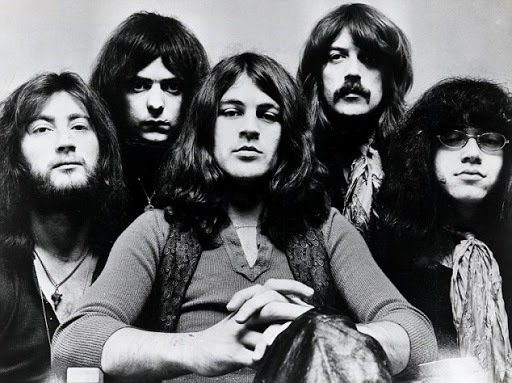

Deep Purple are an English rock band formed in Hertford, Hertfordshire in 1968. The band is considered to be among the pioneers of heavy metal and modern hard rock, although their musical approach changed over the years. Originally formed as a psychedelic rock and progressive rock band, they shifted to a heavier sound with their 1970 album Deep Purple in Rock. Deep Purple, together with Led Zeppelin and Black Sabbath, have been referred to as the "unholy trinity of British hard rock and heavy metal in the early to mid-seventies". They were listed in the 1975 Guinness Book of World Records as "the globe's loudest band" for a 1972 concert at London's Rainbow Theatre and have sold over 100 million copies of their albums worldwide.
Deep Purple have had several line-up changes and an eight-year hiatus (1976–1984). The 1968–1976 line-ups are commonly labelled Mark I, II, III and IV. Their second and most commercially successful line-up consisted of Ian Gillan (vocals), Jon Lord (keyboards), Roger Glover (bass), Ian Paice (drums), and Ritchie Blackmore (guitar). This line-up was active from 1969 to 1973 and was revived from 1984 to 1989 and again from 1992 to 1993. The band achieved more modest success in the intervening periods between 1968 and 1969 with the line-up including Rod Evans (lead vocals) and Nick Simper (bass, backing vocals), between 1974 and 1976 with the line-up including David Coverdale (lead vocals) and Glenn Hughes (bass, vocals) (and Tommy Bolin replacing Blackmore in 1975), and between 1989 and 1992 with the line-up including Joe Lynn Turner (vocals).
Deep Purple were ranked number 22 on VH1's Greatest Artists of Hard Rock programme, and a poll on radio station Planet Rock ranked them 5th among the "most influential bands ever". The band received the Legend Award at the 2008 World Music Awards. Deep Purple (specifically Blackmore, Lord, Paice, Gillan, Glover, Coverdale, Evans, and Hughes) were inducted into the Rock and Roll Hall of Fame in 2016.
